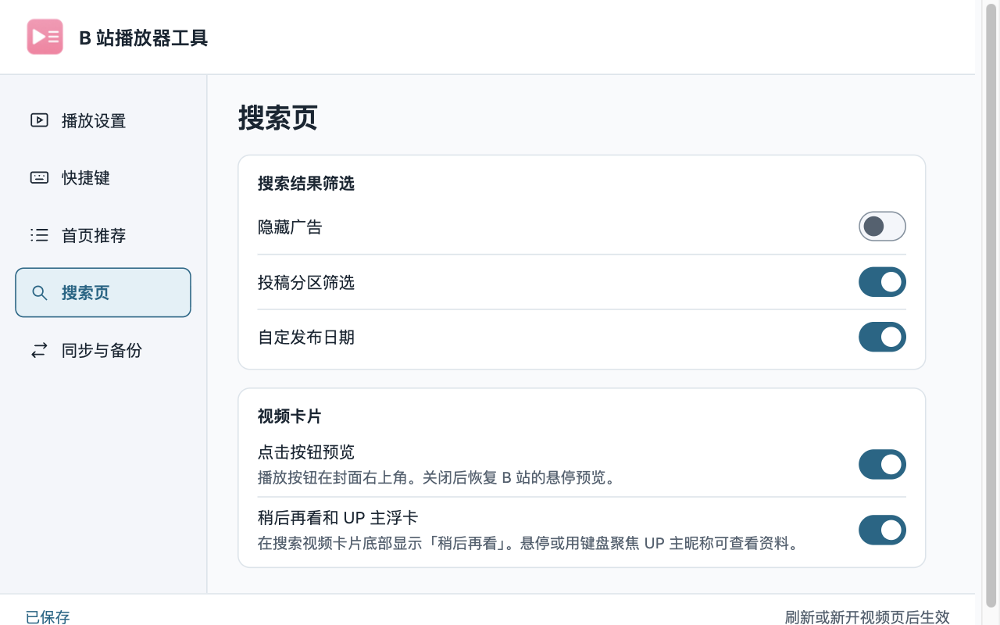
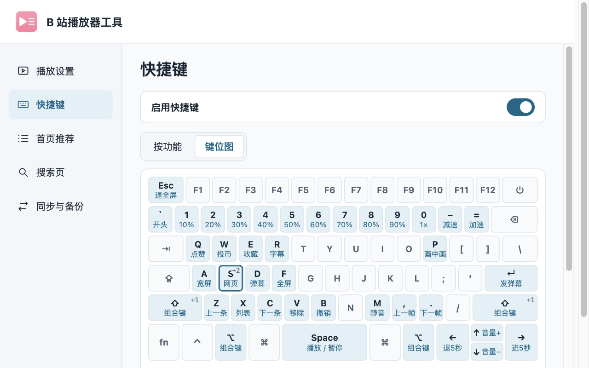
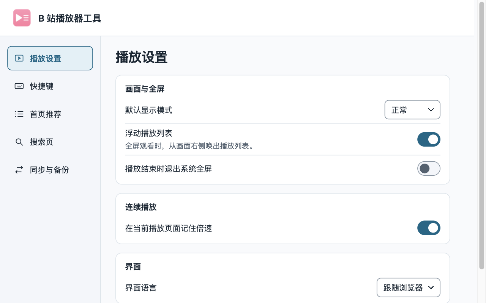

单独设置搜索页
在扩展设置中可分别开关隐藏广告、分区、发布日期、预览和卡片工具。「综合」里的影视和直播照常显示。首页推荐的设置独立保存。

在扩展设置中可分别开关隐藏广告、分区、发布日期、预览和卡片工具。「综合」里的影视和直播照常显示。首页推荐的设置独立保存。

网页全屏或系统全屏时，把鼠标移到画面右上侧即可打开浮动列表。点击图钉或按 X 固定，边看边切换合集、稍后再看或推荐视频。

首页、普通视频、搜索等常用页面的顶栏都能在新标签页打开列表。在列表播放页按 V 移除当前视频并播放下一条，按 B 撤销本页最近一次移除。

在扩展设置里选择默认显示模式、记住同页切换时的倍速。看视频时可用空格播放或暂停，按 - 和 + 调整倍速，也能在设置里重新绑定按键。

保存设置后，刷新当前视频页，或打开一个新的视频页。
搜索框和评论框会保留正常的输入行为。离开输入框后即可继续用键盘控制播放。
在扩展设置中打开「同步与备份」，可导出或导入 JSON 配置。
Chrome 网上应用店更新于